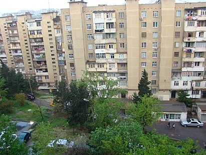

- Ana Sehife
- Kend Meydani
- Icma portali
- Son deyisiklikler
- Tesadufi Meqale
- Layiheler
- Secilmis Meqaleler
- Secilmis Siyahilar
- Secilmis Portallar
- Yaxsi Meqaleler
- Meqale Namizedleri
- Movzulu ay
- Xususi
- Bizimle elaqe
- lane et
- komek
- Aletler
- Sehifeye kecidler
- Elaqeli redaktleler
- Fayl yukle
- Xususi Sehifeler
- Daimi kecid
- Sehife melumatlari
- Bu sehifeye istinad et
- Qisadilmis url elave et
- Qr kodu endir
- Hamsini goster
- Cap et / ixrac
- Kitab yarat
- PDF kimi yukle
- Cap versiyasi
- Diger Layihelerde
- Vikianbar
- Vikidata elementi
- Diller
- Enghlish
- Azerbaycan
- Rus
Yeni Gunashli
Vikipediya, azad ensiklopediya
